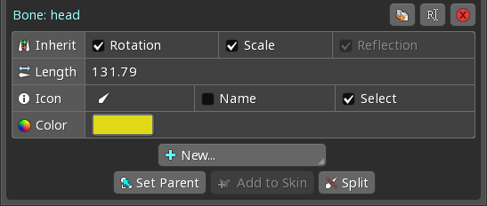

Kaulas – vienas ir pagrindinių elementų Spine programinėje įrangoje. Jie naudojami beveik visose animacijose, net ir tų skeletų, kurie yra paprasčiausi objektai, o ne kokie nors veikėjai. Paprasti skeletai gali naudoti po vieną kaulą vienam paveikslėliui. Sudėtingesni skeletai gali susieti paveikslus su keliais kaulais, kad jie deformuotųsi animuojant kaulus.
Skeletas turi kaulų hierarchiją kurioje visada yra vienas pagrindinis, šakninis, kaulas (žr. 1 pav.). Šakninis kaulas gali turėti po juo esančių antrinių, kitaip vadinamų dukterinių, kaulų, kurie patys savyje gali turėti kitų dukterinių kaulų ir t. t.
 |
1 pav. Kaulų hierarchija
Kaulus galima kurti naudojant „kūrimo įrankį“ (angl. Create Tool) bei pasirinkus bet kurį nors kaulą paspausti New... ir Bone mygtukus hierarchijos medžio (angl. Tree View) savybių lange. Tokiu atveju naujas kaulas bus sukurtas pasirinkto (tėvinio) kaulo viršūnėje.
|  |
2 pav. Kaulo savybės
Toliau apžvelgsime kaulų savybes, kurios matomos 2-ame paveiksle.